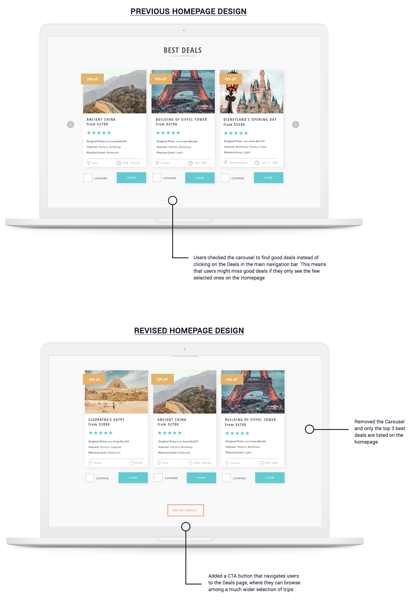
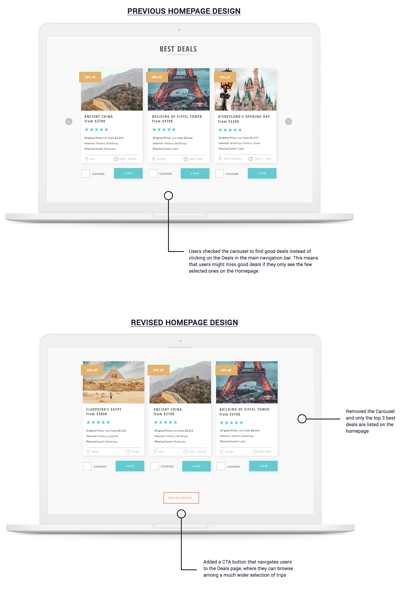

Zeit
E-commerce Responsive Web Design
My Role: UX/UI Designer: UX Research, Information Architecture, Interaction Design, Visual Design, Usability Testing
Client: Zeit*
Team: Self-directed (with expert mentor support and group crit feedbacks)
Prototype: Watch prototype in Invison
Time Period: March - May 2019
*Zeit is a fictional company
Process

01.Research
Goal: To research the current travel market and audience of online travel booking websites
Process: Market Research, Competitive Analysis, User Interviews
Market Research
I conducted a market research to get a better picture of the tourism field and consumers. Since Zeit is the very first time travel website, I couldn't gather already existing information of the time travel industry, which was very challenging. However, by focusing on the ordinary travel industry, I gathered valuable market and demographics findings that are rooted in data and statistics. I could collect the common trends and pain points of online travel booking websites as well. This secondary research method allowed me to gain an understanding of potential needs of travelers.

Competitive Analysis
By analyzing direct (Exodus Travels, Secret Compass, Wild Frontiers) and indirect competitors (Kayak,Travelocity), I understood how other travel booking websites design for their users and how they solve problems for similar user needs. I identified a few direct and indirect competitors and pointed out their strengths and weaknesses in order to be able to position Zeit in the market.

02.Define
Goal: Synthesize research to define the target audience - and their needs, frustrations, goals
Process: Empathy Map, Persona
Empathy Map
To synthesize my findings, I created an empathy map to help me understand my observations from the 1:1 user interviews and to identify patterns that were common across most participants' answers. I grouped the observations into different categories: doing, thinking&feeling, seeing, hearing, gains & pains - for each individual person then common patterns were further categorized into different groups, which is how I developed key insights. Finally, based on these insights, I could identify the user needs.


 
